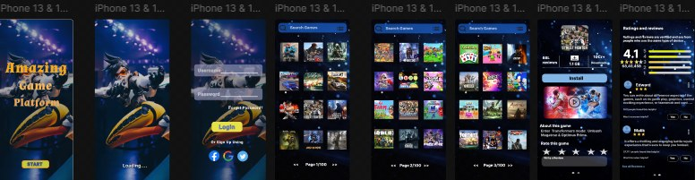
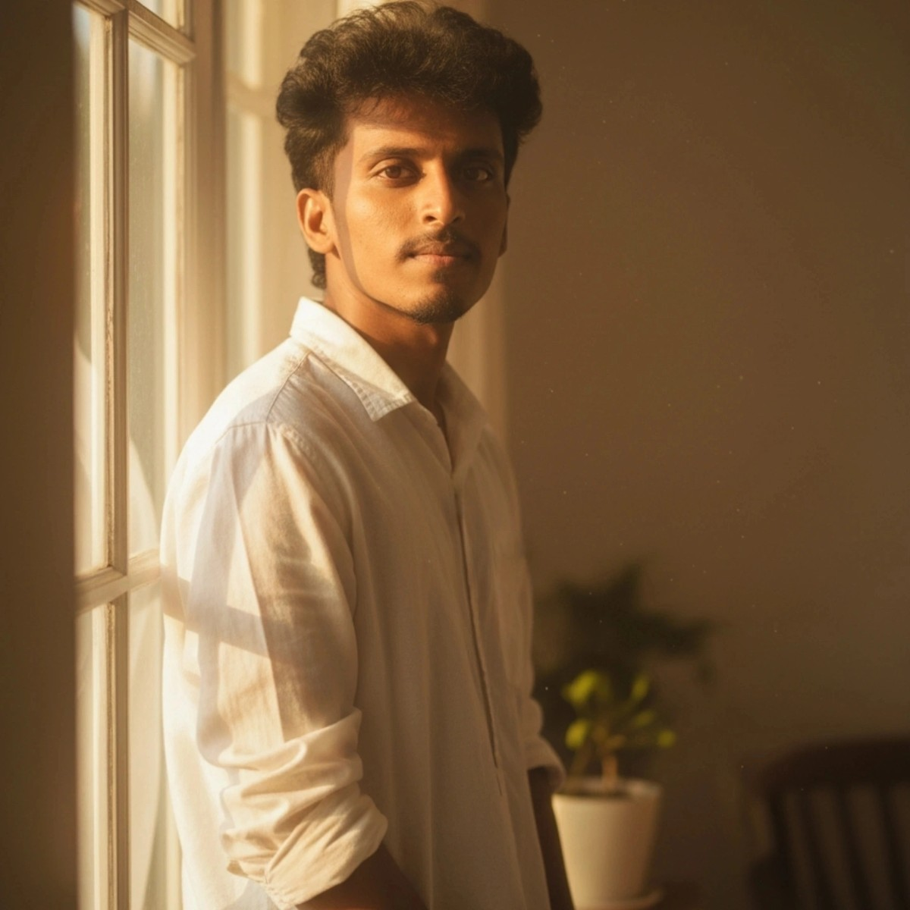
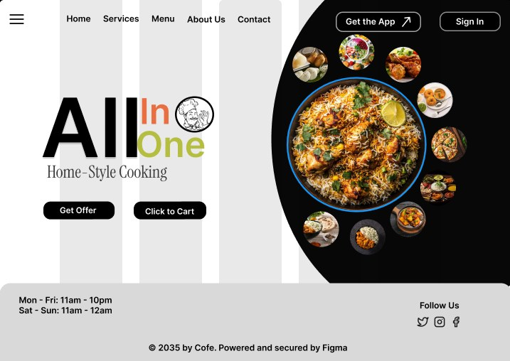
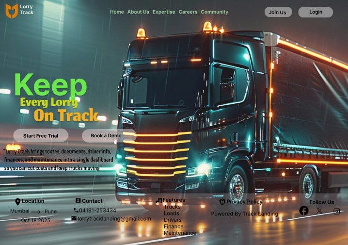
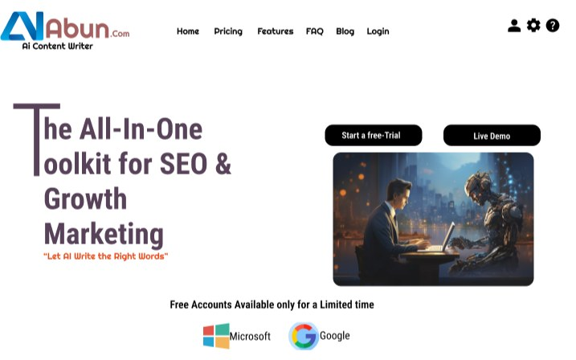
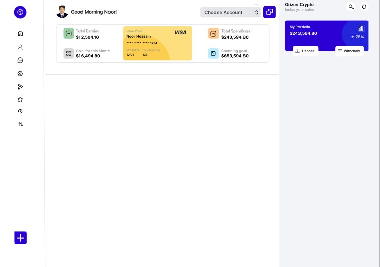

PROJECT / 01

Gaming App UI
A mobile gaming experience exploring onboarding, sign-in and game discovery screens.
View project in Figma ↗Hey, I’m Govardhan Shankar — a detail-oriented UI/UX Designer who enjoys turning ideas into clear, intuitive and visually engaging digital experiences. I bring a mix of interface design, creative tools and a problem-solving mindset.

A mathematics background, creative curiosity and hands-on design projects shape the way I approach digital experiences.
I’m a UI/UX Designer with an M.Sc. in Mathematics and a growing practice in user-centred design. I enjoy wireframing, prototyping, exploring visual systems and solving problems with clarity. My creative interests also include image editing and video production. I’m looking forward to learning with a collaborative team and contributing thoughtful design solutions.
A blend of UI/UX fundamentals, visual creativity and technical problem-solving.
Selected design explorations. Open the Figma files to view the original work and prototypes.

A mobile gaming experience exploring onboarding, sign-in and game discovery screens.
View project in Figma ↗
A home-style cooking concept with food imagery, navigation and clear calls to action.
View project in Figma ↗
A logistics-focused landing page concept presenting tracking and fleet-management value.
View project in Figma ↗
A web landing-page exploration for an AI content and marketing toolkit.
View project in Figma ↗A finance dashboard concept exploring account summaries, cards, balances and quick actions.

Academic foundations, practical training and certifications that support my design journey.
79%
80%
78%
88%
UI/UX Design certification / training · Sep–Oct 2025
Practical training in partnership firm accounts · Dec 2023–Jan 2024
Institution–Industry Interaction Program · Dec 2022–Jan 2023
Sindhujaa Academy · Feb–Mar 2024
Sindhujaa Academy · Sep–Oct 2024
A practical, iterative approach that keeps the user and the problem at the centre.
Explore the problem, context and people using the product.
Organise ideas and clarify the core experience.
Shape layouts, visual systems and interactive prototypes.
Review details, learn from feedback and iterate.
I’m open to UI/UX design opportunities, collaboration and learning from experienced teams. I’d love to hear from you.